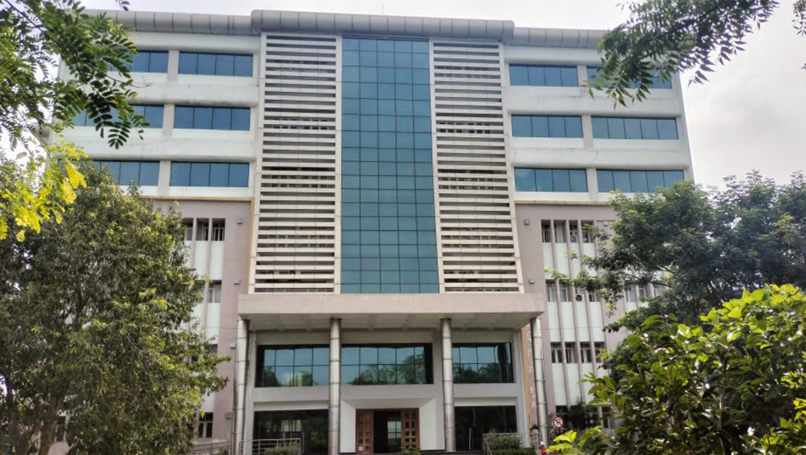

The Department of Chemistry, NIT Warangal is growing from strength to strength while keeping pace with overall development of NIT Warangal. The Department has a team of faculty, graduated from IIT’s, Central Universities and other premier Institutions of higher learning. The Department has good infrastructure and is equipped with the latest sophisticated analytical instruments. The Department has been offering two M.Sc. programmes with the specializations in: i) Organic Chemistry and ii) Analytical Chemistry.The faculty members are actively engaged in research and consultancy. The Department has produced 90 PhDs and has to its credit about 500 research publications in reputed International and National Journals. Currently 35 research scholars are working towards PhD degree.
